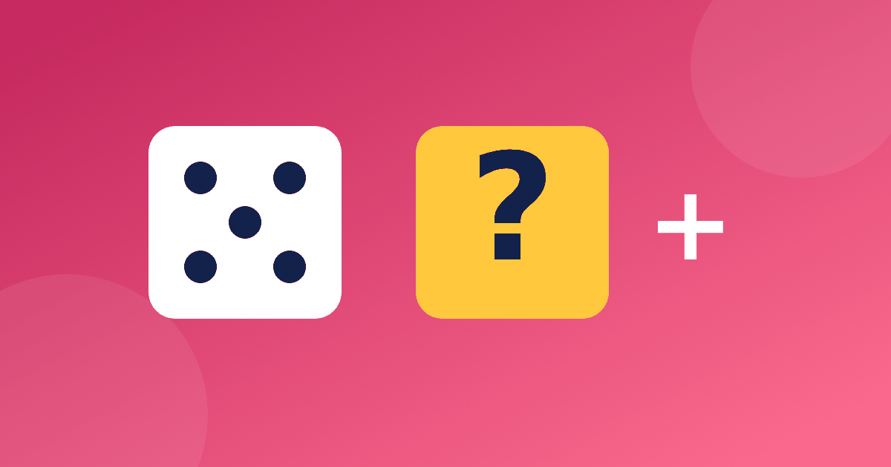

Считаем играя: десять простых затей для вечера и дороги

Многие дети считают лучше, когда им не кажется, что идёт урок. Игра снимает напряжение, а повторение приходит само, поэтому хорошие математические игры для детей так ценят и родители, и учителя. Ниже собраны игры на устный счёт, которые не требуют покупок: хватит кубиков, листа бумаги и пяти свободных минут. Выбирайте то, что подходит возрасту ребёнка, и не огорчайтесь, если какая-то затея не пошла: тогда просто возьмите другую.
Игры для первого и второго класса
Для малышей важнее всего состав числа и сложение в пределах двадцати. Вот три простые затеи.
- Цепочка. Назовите стартовое число, например 7. Ребёнок прибавляет 5 и получает 12, затем вы просите убрать 3, выходит 9, потом снова прибавить 8, получается 17. Цепочку можно удлинять по мере уверенности.
- Дополни до десяти. Вы называете число от 1 до 9, ребёнок отвечает, сколько не хватает до десяти. Услышав 6, он говорит 4, услышав 3, говорит 7. Это основа всех переходов через десяток.
- Два кубика. Бросаем оба кубика и складываем выпавшие числа. Выпало 4 и 6, значит, получилось 10. Можно договориться, что выигрывает тот, у кого сумма ближе к десяти.
Подробнее о том, как с помощью пар чисел закрепить десяток, рассказывает статья состав числа до 10.
Если ребёнок справляется легко, усложните правила: пусть в цепочке будет не три шага, а пять, или добавьте условие не называть число больше двадцати. Если трудно, наоборот, оставьте два шага и разрешите опираться на пальцы или счётные палочки.
Игры для третьего и четвёртого класса
Старшим детям нужны задачи посложнее и немного соревновательности. Можно использовать такие игры для счёта в уме.
- Сотня. Загадайте число от 1 до 100, например 64. Ребёнок называет, сколько нужно добавить, чтобы дойти до сотни. Верный ответ 36, ведь 64 + 36 = 100.
- Магазин с ценниками. Один играет продавца, другой покупателя. Покупка стоит 270 рублей, дали 500. Сдачу нужно назвать без бумаги. Тема подробно разобрана в статье сдача в магазине.
- Быстрый квадрат. Нарисуйте таблицу три на три, в клетках числа. Назовите сумму, а ребёнок ищет в таблице пару, которая её даёт.
Для четвероклассников годятся цепочки с круглыми числами. Начинаем со 100, отнимаем 30, прибавляем 45, отнимаем 15. Получаются 70, затем 115, затем снова 100.
Игры на ходу
Часть затей вообще не требует ни бумаги, ни кубиков. Играя по дороге в школу, можно устроить «охоту за суммой»: смотрим на номера домов или автобусов и складываем цифры. Дом с номером 27 даёт 2 + 7 = 9, а автобус 48 даёт 4 + 8 = 12. Тот, кто первым назвал результат, получает очко. Такая игра хороша тем, что не нужно готовиться заранее.
Другой вариант называется «Угадай число». Загадайте число до 50 и подсказывайте по одной подсказке. Например, оно больше 20, но меньше 30, а в сумме с 6 даёт 32. Ребёнок вычитает 32 − 6 и получает 26. Заодно он учится читать условие и сопоставлять факты.
Ещё одна затея для очереди или поездки называется «Сколько останется». Представьте, что у вас 20 рублей на воображаемые покупки: конфета за 6 рублей и печенье за 4 рубля. Вместе они стоят 10 рублей, значит, останется ещё 10.
Как проводить игру, чтобы она нравилась
У хорошей игры есть несколько общих правил. Они одинаково полезны для любых математических игр для детей.
- Игра короткая. Десять минут вполне достаточно, лучше остановиться чуть раньше, чем интерес угаснет.
- Соревнуются не с братом и не с классом, а с собой вчерашним. Так проигравших нет.
- Взрослый тоже ошибается, и это нормально. Иногда специально допустите ошибку и попросите ребёнка её найти.
- Хвалим за способ, а не только за результат: «ты придумал, как обойти трудное место».
Заведите листок, куда вы вместе вписываете любимые игры, и раз в неделю выбирайте одну из них. Так затеи не надоедят, а у ребёнка появится ощущение, что он сам влияет на занятия.
Игра в тренажёре и на прогулке
Для дороги игры не нужны никакие предметы: цепочки и дополнения до сотни отлично звучат в автобусе или в очереди. Если же хочется занятия с экраном, в тренажёре «Устный счёт» есть игра «Дай сдачу», а также повторение сложных примеров, к которым ребёнок возвращается позже. Открыть его можно по ссылке тренажёр «Устный счёт». Бесплатно доступен модуль «Состав числа».
Если ребёнок вообще не любит математику, начните с мягкого вступления и прочитайте статью как заинтересовать ребёнка математикой. Там описаны способы вернуть интерес без давления.